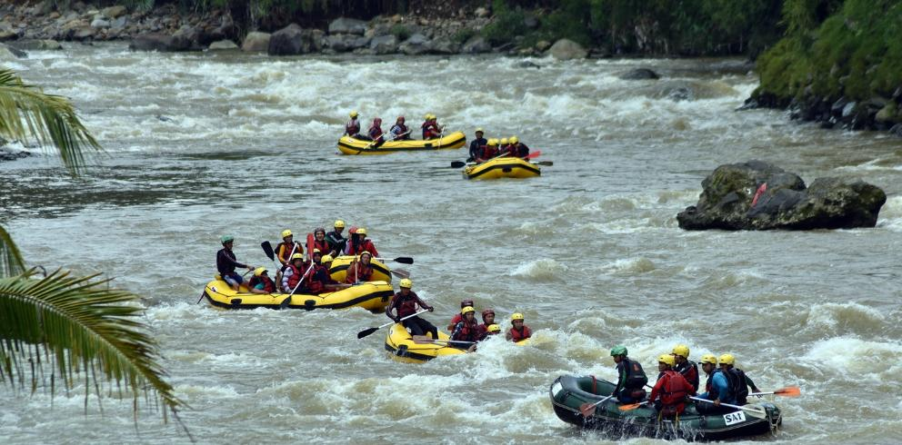

Air Terjun Curung Sikarim
Curug Sikarim adalah air terjun yang berada di Dataran Tinggi Dieng
Wonosobo antara Gunung Bisma dan Gunung Sikunir pada ketinggian
1.800 meter di atas permukaan air laut. Air terjun yang berasal dari
limpahan Telaga Cebong tersebut mengalir menuruni tebing perbukitan
setinggi hampir 90 meter dan jatuh ke Sungai Mlandi.
Air Terjun Sikarim atau ada pula yang menyebutnya dengan Curug
Sikarim, merupakan satu dari sekian keindahan alam Dieng yang patut
untuk diacungi jempol. View dari air terjun Dieng yang satu ini
sudah tidak diragukan lagi, banyak pengunjung yang penasaran dan
ingin menyaksikan lebih dekat Air Terjun Sikarim ini. Jika kamu
melewati jalur Dataran Tinggi Dieng, curahan air terjunnya sudah
dapat terlihat. Jangan lewatkan untuk mengunjungi air terjun atau
curug yang bisa dikatakan sebagai air terjun tertinggi di Pulau Jawa
yang satu ini.
Kebun Teh Tambi
Kebun Teh Tambi adalah salah satu destinasi wisata di Kota Wonosobo
Jawa Tengah dengan panorama alam hijau yang mempesona. Wisata alam
ini menjadi obyek kekinian yang banyak digemari kaum muda karena
banyak terdapat spot instagenicnya. Selain melihat hamparan kebun
teh yang hijau, kalian juga bisa menikmati sajian panorama Gunung
Sindoro dan Sumbing yang mengagumkan. Wonosobo memang menjadi
Kabupaten dengan kekayaan alam yang luar biasa menakjubkan.
Kemudian untuk biaya lainnya yaitu parkir area kendaraan, baik motor
maupun mobil. Kalian hanya cukup membayar tiket parkir sebesar
Rp.2000,- untuk sepeda motor dan Rp.5000,- untuk mobil. Tak hanya
biaya yang terjangkau, wisatawan akan disuguhkan dengan pemandangan
alam yang dapat dinikmati sepuasnya. Kamu dijamin akan betah untuk
berlama-lama ditempat tersebut.
Telaga Menjer
Telaga menjer merupakan telaga terluas dikawasan Dieng, terletak di
Desa Maron Kecamatan Garung Kabupaten Wonosobo, dengan luas sekitar
70 Ha dan kedalaman sekitar 60 meter, berada pada ketinggian sekitar
1300 Mdpl, tepatnya dibawah gunung Sikudi, telaga yang dikenal oleh
berbagai kalangan sejak tahun 1905 karena dokumentasinya
dipublikasikan oleh Warga berkebangsaan Belanda, bahkan sampai tahun
1940 punmasih sering diabadikan dalambentuk foto oleh warga berlanda
tersebut yang akhirnya datanya tersimpan di Belanda.
Terletak dibawah gunung yang lebat tentunya menjadi keuntungan
tersendiri bagi telaga menjer karena airnya akan selalu melimpah,
selain untuk kepentingan wisata, pemancingan, pengairan, telaga
menjer juga dimanfaatkankan sebagai pembangkit Listrik tenaga air
(PLTA) mulai tahun 1982 sampai sekarang.
Arum Jeram Serayu

Wisata Arum Jeram Serayu di Wonosobo Jawa Tengah adalah salah satu
tempat wisata yang berada di desa wonosobo, kabupaten wonosobo,
provinsi jawa tengah, negara indonesia. Wisata Arum Jeram Serayu di
Wonosobo Jawa Tengah adalah tempat wisata yang ramai dengan
wisatawan pada hari biasa maupun hari liburan. Tempat ini sangat
indah dan bisa memberikan sensasi yang berbeda dengan aktivitas kita
sehari hari.
Wisata Arum Jeram Serayu di Wonosobo Jawa Tengah memiliki pesona
keindahan yang sangat menarik untuk dikunjungi. Sangat di sayangkan
jika anda berada di kota wonosobo tidak mengunjungi wisata arung
jeram yang mempunyai keindahan yang tiada duanya tersebut.
Telaga Warna

Telaga Warna adalah salah satu objek wisata yang berada di kawasan
Dataran Tinggi Dieng, Kabupaten Wonosobo, Jawa Tengah. Telaga ini
merupakan salah satu destinasi wisata andalan Kabupaten Wonosobo.
Nama Telaga Warna sendiri diberikan karena keunikan fenomena alam
yang terjadi di tempat ini, yaitu warna air dari telaga tersebut
yang sering berubah-ubah. Terkadang telaga ini berwarna hijau dan
kuning atau berwarna warni seperti pelangi. Fenomena ini terjadi
karena air telaga mengandung sulfur yang cukup tinggi, sehingga saat
sinar Matahari mengenainya, maka warna air telaga tampak berwarna
warni.
Telaga Warna berada di ketinggian 2000 meter di atas permukaan laut,
dan dikelilingi oleh bukit-bukit tinggi yang menambah pesona
keindahan alam sekitar telaga warna. Keindahan telaga warna akan
lebih terasa jika pengunjung naik ke salah satu bukit yang
mengelilingi telaga ini.